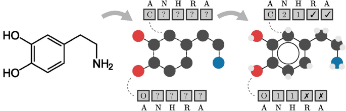
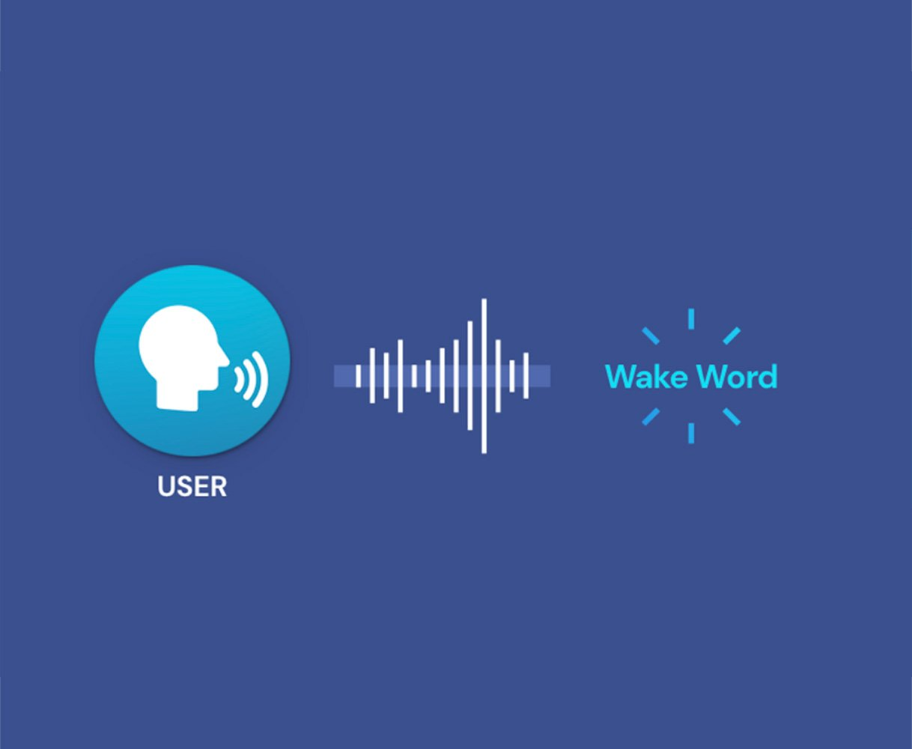
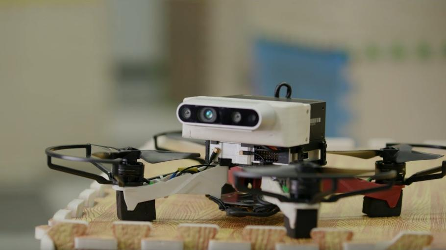

Repositories & Projects
Semantic Image Search (CLIP)
Zero-shot semantic search using CLIP.
Molecular Property Prediction
GNNs for drug discovery via molecules.
Wake Word Detector
Real-time CNNs on MFCC features.
State Estimation (NIR-EKF)
Robust EKF with innovation ratio.
Preterm Birth Prediction
Hybrid EKF + RL for medical AI.
Retail Sales Forecasting
GNNs for retail demand forecasting.

Sentiment Analysis
Twitter/Facebook classification.

Voice Cloning
Neural speech synthesis and adaptation.